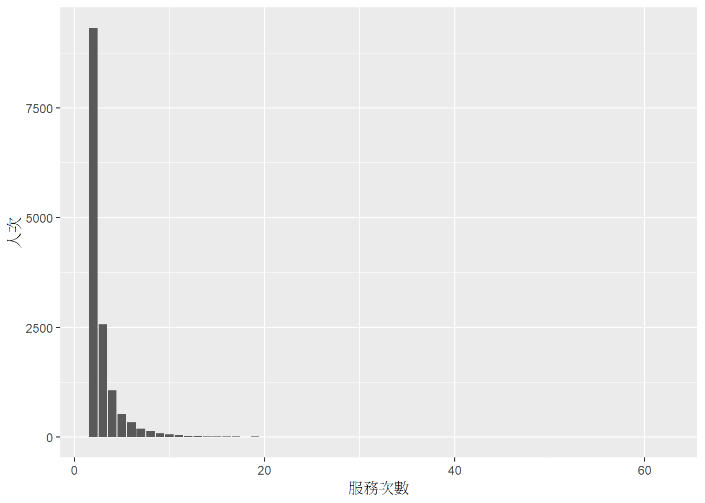
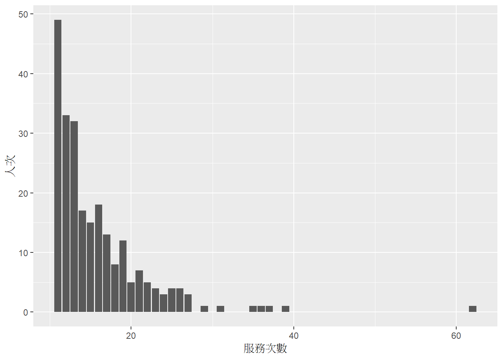
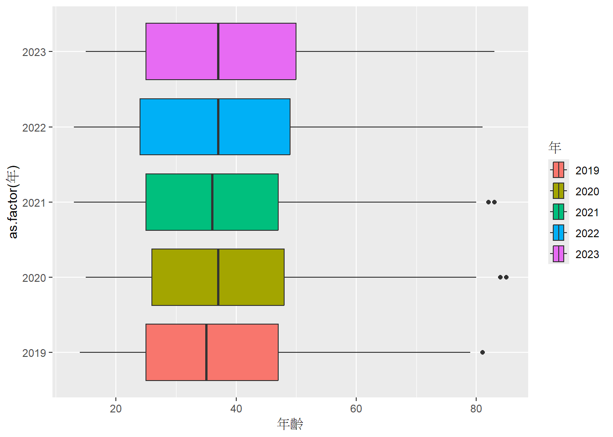
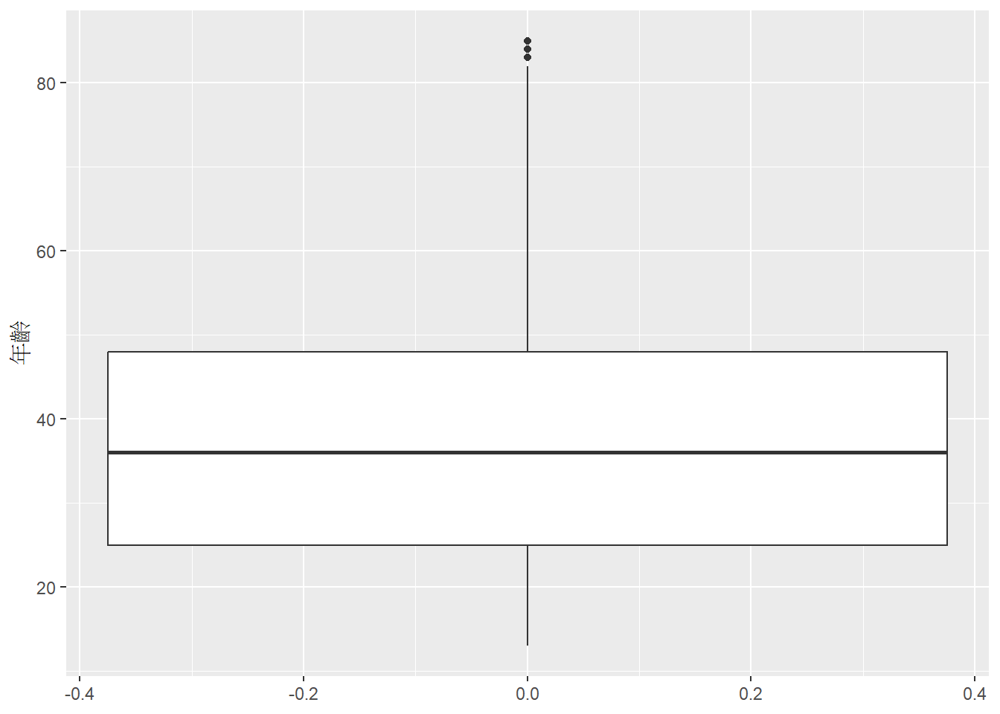
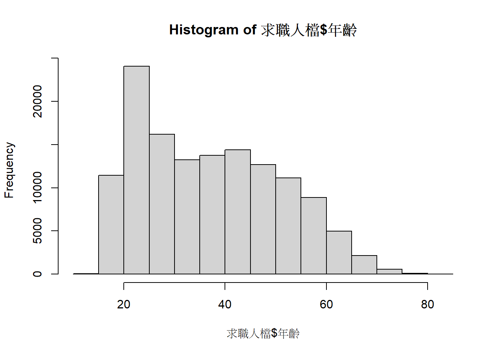

4 異常值處理
#load("F:/提供主計處資料/X5y.RData") #162197筆
#姓名重複筆數與人次?
A <- X5y[!duplicated(X5y$求職人),] #總數162197筆，沒重複的筆數是133734筆
B <- X5y[duplicated(X5y$求職人),] #重複筆數 28463 (會去掉自己1筆)
B1 <- B[!duplicated(B$求職人),] #重複筆數中，使不重複後筆數14555人
#故X5y中，有28463+14555筆=43018重複
C <- B1 %>% select(求職人) %>% # 實際上確實有43018筆重複
left_join(X5y,by="求職人")
D <- C %>% arrange(求職人) %>% group_by(求職人) %>% #求職人重複服務次數
summarise(服務次數=n())
E <- D %>% group_by(服務次數) %>% summarise(人次=n()) %>%
mutate(prop=percent(人次/sum(人次),0.1)) # 服務次數的人數排比
ggplot(E, aes(x=服務次數, y=人次)) + geom_col()

#答案就是5年內有14555人重複服務(共43018筆紀錄)，服務次數排比如上
#所以，
#1總資料表去掉重複者，用於分析求職者特性 133734筆-求職人檔
#2總資料表去掉重複者，用於分析服務能量 162197筆- X5y
#求職人單獨檔
求職人檔 <- A
#服務多次名冊與人數
來2次以上求職人檔 <- C
cat("求職人最多接受服務次數: ",max(E$服務次數))## 求職人最多接受服務次數: 62## 來2次以上人數: 43018 #資料筆數
求職人次 <- nrow(X5y)
求職人數 <- nrow(求職人檔)
#重複人次=求職人次-求職人數
cat("求職人次:", 求職人次, "; ","求職人數:",求職人數,";")## 求職人次: 162197 ; 求職人數: 133734 ;## 重複人次 = 43018 #(以下不必執行)
# 驗證資料唯一性與正確
# 姓名與身分證一致?
#A <- 求職人檔 %>% group_by(求職人,身分證號碼) %>%
# filter(求職人==身分證號碼)
#查證是否有重複姓名
#B1 <- 求職人檔 %>% group_by(求職人,身分證號碼) %>%
# filter(身分證號碼==A$身分證號碼[1])
#B2 <- X5y %>% group_by(求職人,身分證號碼) %>%
# filter(身分證號碼==A$身分證號碼[2])
#以上都是唯一，故保留，繼續往下執行
# 年齡
# Density plot with mean lines and marginal rug
求職人檔 %>% ggplot(aes(x=年齡, y=as.factor(年),fill=年))+
geom_boxplot()## Warning: Removed 2 rows containing non-finite outside the scale range
## (`stat_boxplot()`).
## Warning: Removed 2 rows containing non-finite outside the scale range
## (`stat_boxplot()`).
